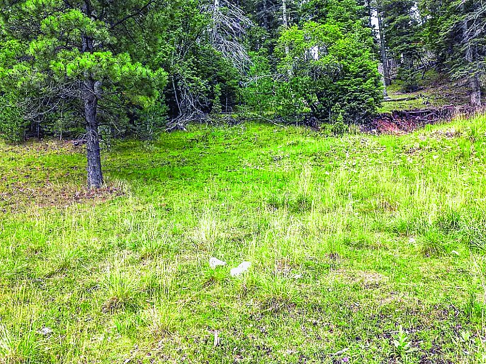
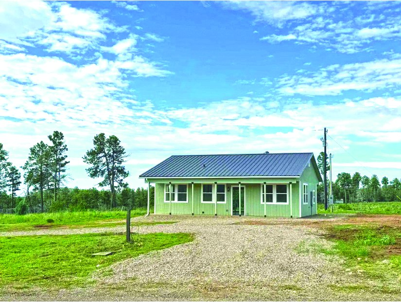
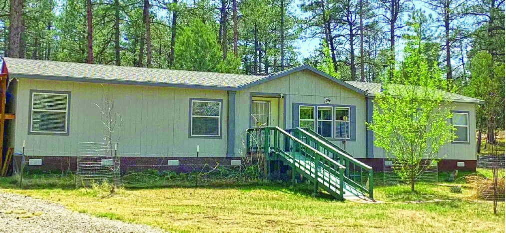

$209,000
2 Bedroom Property
2 bd · 1.75 ba
MLS #171884
$209,000
2 Bedroom Property
2 bd · 1.75 ba
MLS #171884

0.214 Acre Property
Call for price
| Price | Call for price |
|---|---|
| Land | 0.214 acres |
| MLS # | 173024 |
| Listed by | Future Real Estate |
| Print edition | October 2026 Otero County Edition, page 12 |
About this property
Come see the beautiful views this lot has to offer! Dream about the home you can build here and enjoy the mountain views. Easy road access and ability to join a water association. Approx. 0.214 acres. Contact Debbie Loper 575-430-9511.
Interested in this property?
Office phone: 575-415-4039
Future Real Estate
Please contact the listing agent or company directly. The Real Estate Roundup is a publisher and does not show or sell properties.
Listing details and photo reproduced from the October 2026 print edition of The Real Estate Roundup (page 12), as printed. Prices and availability can change after publication — confirm with the listing agent.
More Homes
$209,000
2 Bedroom Property
2 bd · 1.75 ba
MLS #171884

$254,900 Property in Timberon Timberon, New Mexico MLS #171894 $550,000
3 Bedroom 27.261 Acre Property in Weed
3 bd · 1 ba · 27.261 acres
Weed, New Mexico
MLS #172060
$550,000
3 Bedroom 27.261 Acre Property in Weed
3 bd · 1 ba · 27.261 acres
Weed, New Mexico
MLS #172060
 $205,000
2 Bedroom 0.209 Acre Property
2 bd · 1 ba · 0.209 acres
MLS #172214
$205,000
2 Bedroom 0.209 Acre Property
2 bd · 1 ba · 0.209 acres
MLS #172214
 $399,000
4 Bedroom 2.67 Acre Property
4 bd · 2.67 acres
MLS #172318
$399,000
4 Bedroom 2.67 Acre Property
4 bd · 2.67 acres
MLS #172318

$275,000 4 Bedroom 1.025 Acre Property 4 bd · 2.5 ba · 1.025 acres MLS #172386